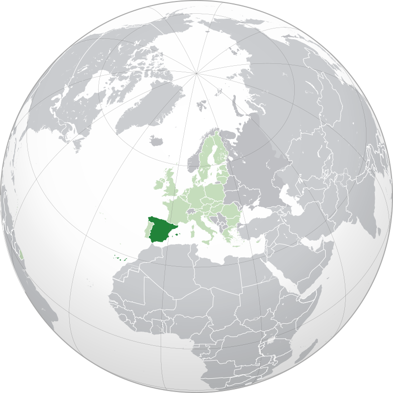

Spanish cuisine is heavily influenced by historical processes that shaped local culture and society in some of Europe's Iberian Peninsula territories. Geography and climate had great influence on cooking methods and available ingredients. These cooking methods and ingredients are still present in the gastronomy of the various regions that make up Spain. Spanish cuisine derives from a complex history where invasions and conquests of Spain have modified traditions which made new ingredients available. Thus, the current and old cuisine of Spain incorporates old and new traditions.